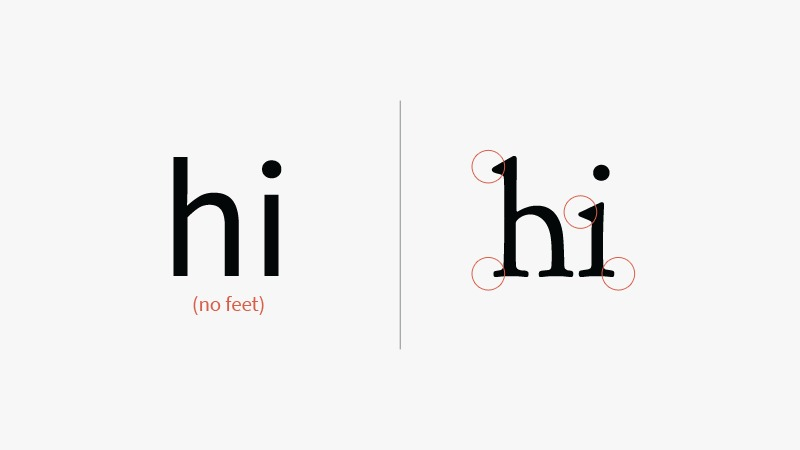
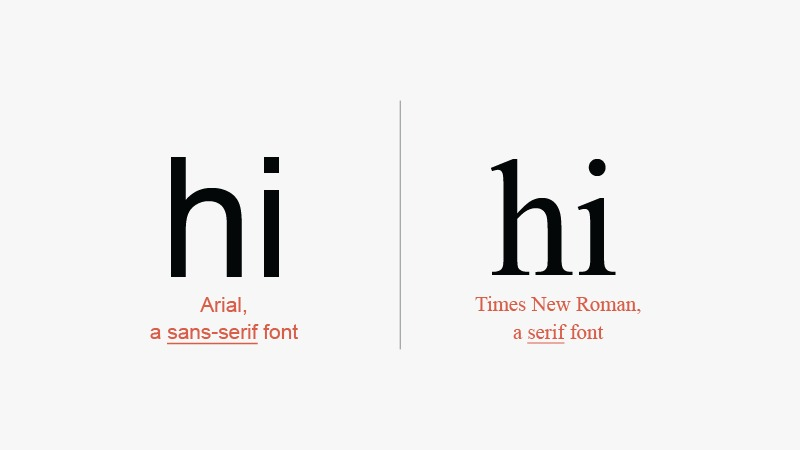

The above are examples of Sans-Serif fonts
What's the difference between a Sans-Serif font and a Serif font?
The "hi" on the left panel is using the Sans-Serif font whereas the latter is using the Serif font.
If you look closely, you will be able to see the differences between both font typographies. Those are the serifs. They are absent in Sans-Serif fonts.
The picture above shows you two fonts that i'm sure you're familiar with (Arial on the left, Times new roman on the right) Can you see the pattern?
Generally, Sans-Serif fonts tend to look more:
When writing, Sans-Serif fonts are a good form of typography to use. It is easier on the readers eyes and is calming. Sans-Serif fonts are typically used with digital publications or magazines.